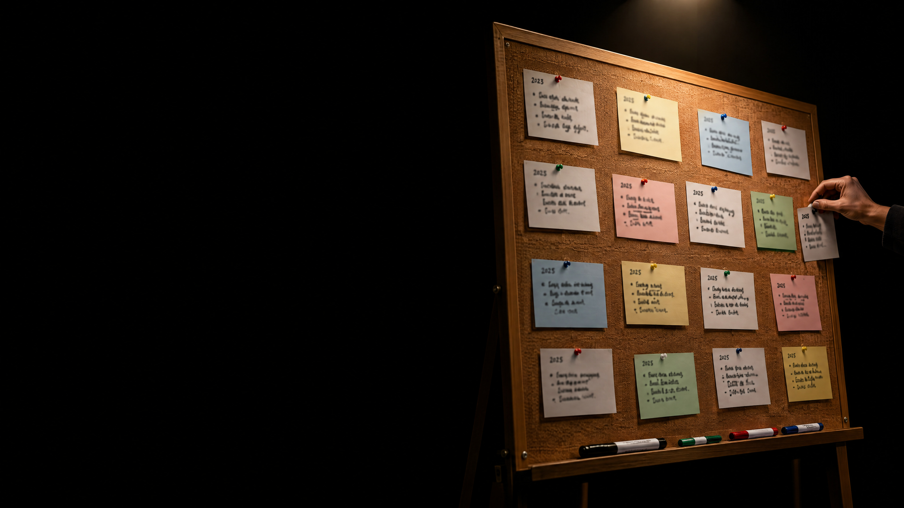

trust, but check.
which errors did the agent find in last year's list?
which of our cards made it, which are “still to check”?
what did the agent add on its own?
click a source: does it say what the app says?
